This lab will take you through the functionality of Development Hub and it's usage.
An Issue record must be created to begin working on a new feature or bug fix.
- To create an Issue, Navigate to the Issues sub area under the Issues area
- Click ‘New'
- You will then need to complete the following fields:
Tab | Field | Example Value | Explanation |
General | Name | Automatically email quote to customer | The name of the issue. |
General | Type | Feature | Either ‘Feature' or ‘Bug'. |
General | Description | Automatically emails a quote to the customer when made active. | A longer description for the issue. |
Azure DevOps | Work Item ID | 10001 | Used to link the commit to the correct Work Item in Azure DevOps |
- Click ‘Save'

In order to develop a solution to the Issue we created an unmanaged development solution is required. The unmanaged solution will be named using the name of the Issue.
- Clicking the ‘Develop' button in the command ribbon will trigger the creation of the unmanaged solution and set the status of the Issue to ‘In Progress'. 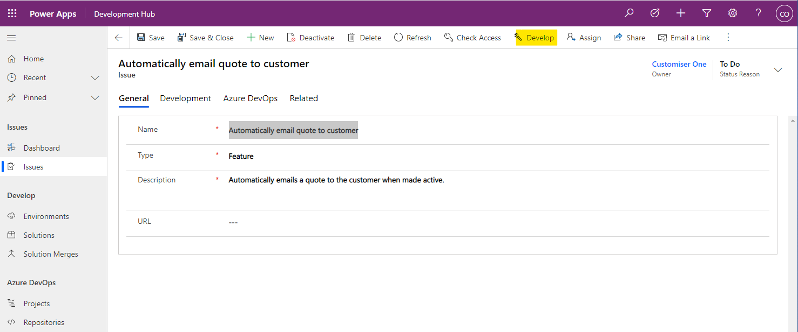
- Open the Power Platform Maker Portal and select the environment which Development Hub is installed. To change environment you select the Environment dropdown in the top right corner of the portal. 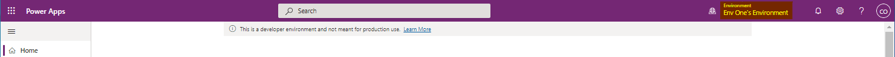
- Select ‘Solutions' from the navigation panel on the left side of the portal. This will display all the solutions installed into the environment. You will see a solution with a display name that matches the name given to the issue you created earlier. Clicking the display name will open the solution which will be empty. 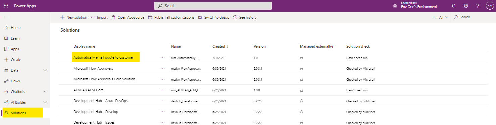
- This is where you can add new and existing artifacts to your solution and make changes needed to resolve the Issue. 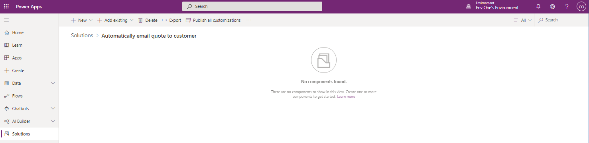
Example - Add a new table
- To add a new table, select the + New button in the toolbar and select Table from the dropdown list. 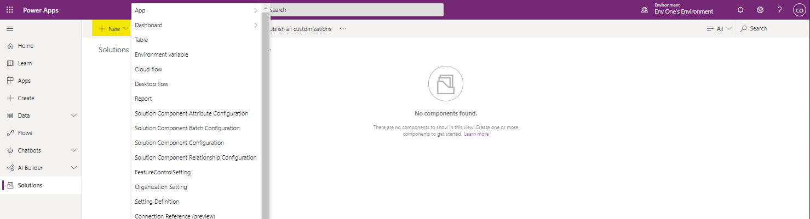
- This opens a pane on the right side of the portal where you can define the properties of the new table. 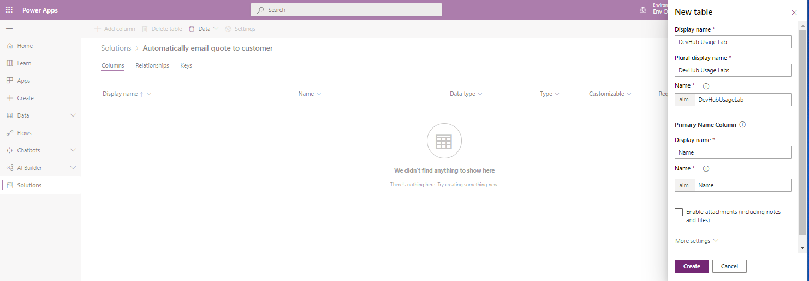
- Once the table is created you will see a list of the standard Dataverse columns. You can now add further customisations to the table.
Recommended steps to complete before requesting a merge
- Run any potentially impacted tests locally against the development environment. This allows early identification of any issues that may have been introduced and is the optimum time to find and resolve issues.
- If you are making code changes, raising a draft pull request so team members can give feedback is useful. This means your code review takes place outside of the solution merge process. If the code review happens during the merge process and issues are found then this will block other solution merges until you PR is approved.
To add your changes to the master solution and have them deployed into the other environments you need to create a Solution Merge.
- Open the Development Hub app, and navigate to the Issue. Select the Development tab where you will see a view called Solution Merges. Click + New Solution Merge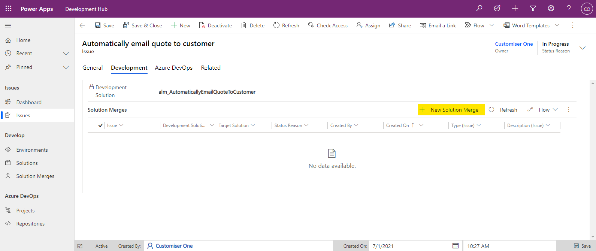
- The Quick Create: Solution Merge pane will be displayed on the right side of the portal.
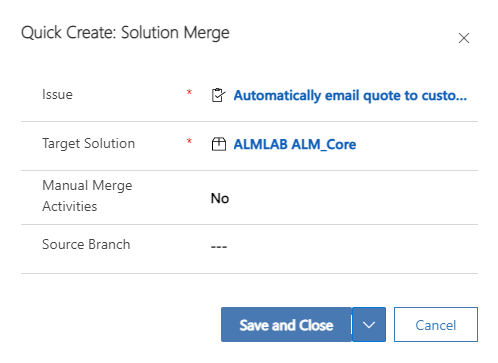
Field | Example | Explanation |
Issue | Automatically email quote to customer | Link to the related solution. This will already be populated. |
Target Solution | ALMLAB ALM_Core | The solution to merge the changes into. |
Manual Merge Activities | No | Enabling the Manual Merge Activities will cause the merging process to pause before extracting and committing to source control. This is useful where you are merging changes by hand (e.g. where you need to delete components from the solution or modify a component not included in the development solution). |
Source Branch | Empty | If the solution to be merged has associated source code (e.g. you have made changes to plugin assemblies, web resources, tests or deployment logic) then you must provide the branch to be merged in here. |
- You will now see a record in the Solution Merges view for the merge record you created. 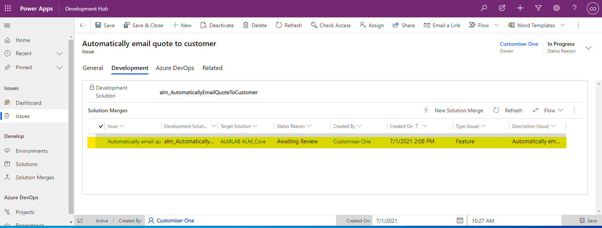
- Select the record and click Edit or double click the row to open the Solution Merge form. You can now copy the URL and send it to someone to review and Approve.
To start the process of merging the developed changes into the master solution the Solution Merge record must be approved. On a project you would ask another team member to review your solution merge. When reviewing a merge some of the things to look out for are:
- Does the solution contain everything it would need to allow a merge to be successful. For example Dependencies, Plugin Steps etc.
- Does the solution contain items that it does not need. For example when adding an existing Table to your solution, did all the components unexpectedly get included?
- Open the solution merge form and click Approve in the toolbar. This will change the Status Reason from Awaiting Review to Approved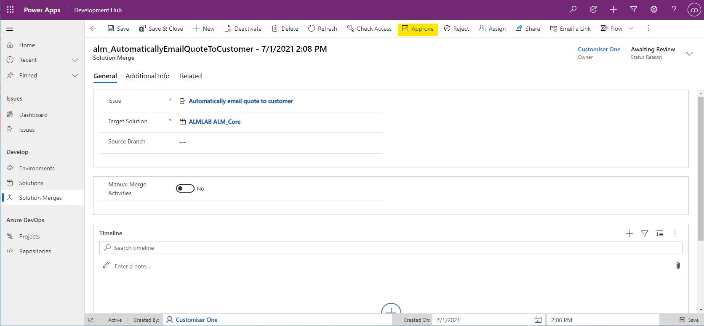
- If there are no solution merges in progress then the status reason will change to Merging. If another merge is in progress then it will be set to Queued. Queued solution merges will start as soon as the merges ahead of it have been complete.
- If the solution merge fails for any reason the Status Reason will be set to Failed. Details of the error will be added to the Timeline.
- Once a solution has been merged into master it is extracted into a branch with the same name as the Issue and A Pull Request is raised in Azure Devops with a link to the Work Item ID that was set on the Issue. The Status Reason of the solution merge is set to Awaiting PR Merge.
If Manual Merge has been enabled for the solution merge, then the merging process is paused to allow either the solution merge creator or approver to modify the target solution before it is extracted. This is useful for scenarios where the complete set of changes for a given issue couldn't be moved in an unmanaged solution.
A great example of such a change would be deleting a component since there is no mechanism within an unmanaged solution to delete a component in the target environment.
When the merging process is in a state where manual merge activities can begin, the solution merge will transition to an Awaiting Manual Merge Activities status and a Flow Approval is created for either the solution merge creator or approver to action.
After the manual activities are complete, follow these steps to resume the merging process.
- Navigate to the Power Automate Maker Portal (e.g. https://unitedkingdom.flow.microsoft.com/)
- Ensure you are in the correct environment (top right) 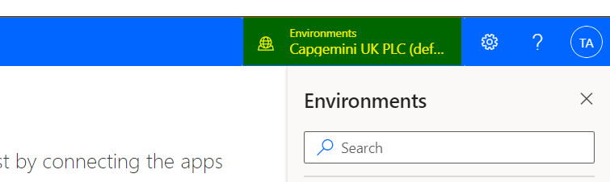
- Select Action Items on the left then Approvals

- Select the created request in the list of "Received" requests 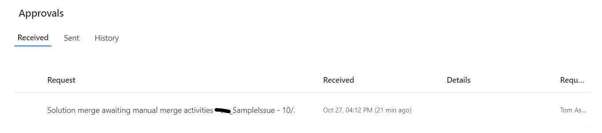
- Select Merged as the response then Confirm to the bottom 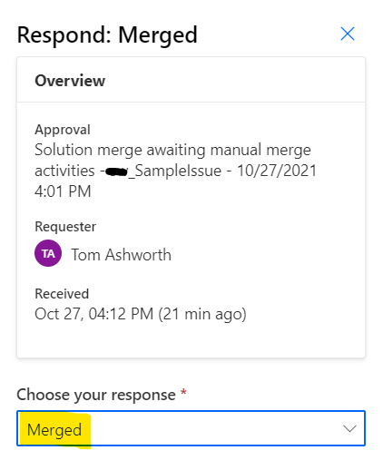
- The merge will now resume by extracting the target solution from the master environment.
Not every merge will be successful and therefore an understanding of how to mitigate these proves valuable. This section will cover what Development Hub does to handle these and the steps required to retry the merge.
Merging your development solution from dev to master could fail for a few reasons although the most common are:
- missing solution dependencies
- solution import timeout
In this event, the solution merge will transition into a Failed status and a note will be added to a the timeline. If the development solution failed to import the note will include import error resembling this note:
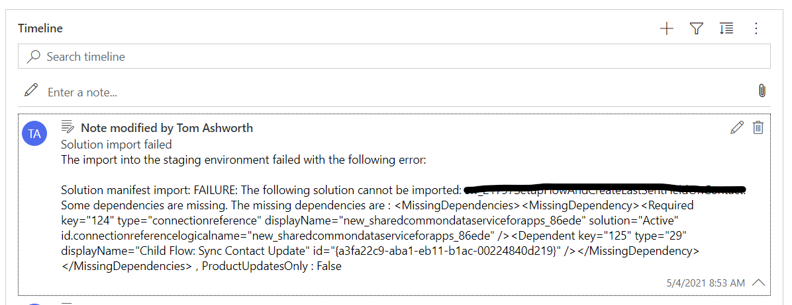
Otherwise, if any other error occurs, a more generic note is created which includes a link to the Cloud Flow run which you can use to diagnose the fault. To make the hyperlink clickable, use the expand toggle on the right of the note.
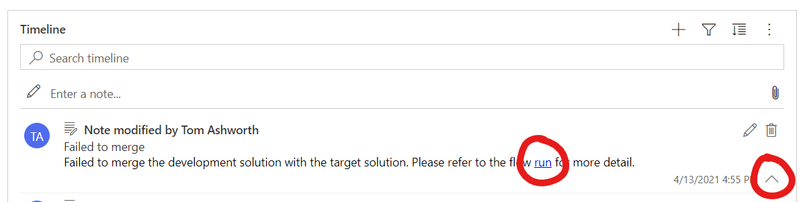
Once you believe the error to be resolved you can retry the solution merge using the retry button found in the ribbon of the solution merge.
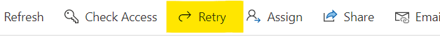
Negative : Note that once the solution has begun merge it blocks all other solution merges until it is complete, including while it is Failed. This is because once the development solution is imported in the master environment, the environment is considered "dirty" until the changes are merged into source control. If another solution were to be imported and extracted, it would include the changes of the previous incomplete merge.
The customisations have now been extracted into the Git repository and a Pull Request has been created ready for review. To view the PR, open the Azure Devops (ADO) project, expand the Repos section of the navigation on the left of the portal and select Pull requests. Select the Active tab and you will see the PR related to your changes. Click on the PR to open up the details.
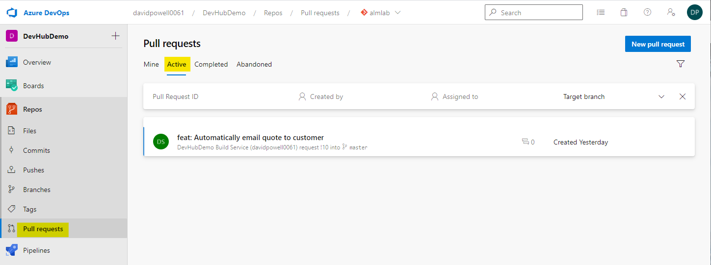
The Overview tab contains the details of a PR such as required checks that must be completed before a PR can be completed, a list of required and optional reviewers and and comments that have been made. There is also a Work items section where you will see a link to the work item linked to the Dev Hub Issue.
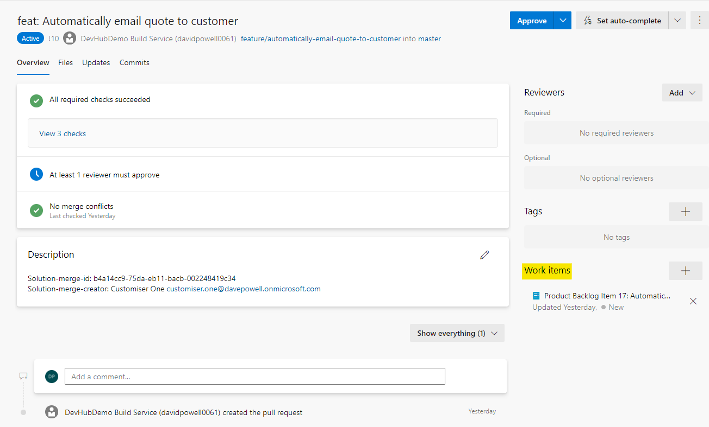
Select the Files tab to view all of the files that have been changed as part of this PR. This is where you can make comments against lines of code which the owner of the PR will be notified about.
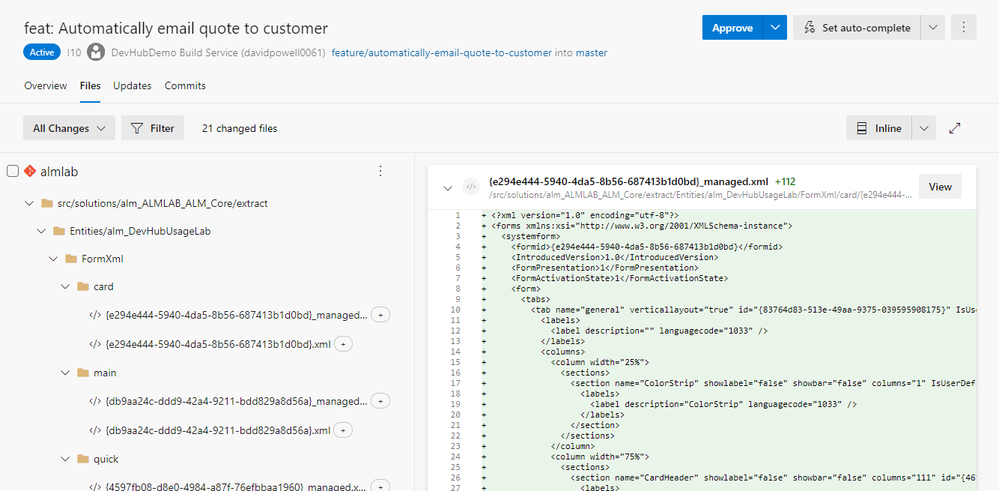
Approving the PR
- When you have checked the changes you approve the PR using the Approve button at the top right of the page. 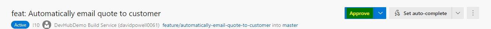
- Once all of the required checks have been successful you will be able to complete the PR using the Approve button. 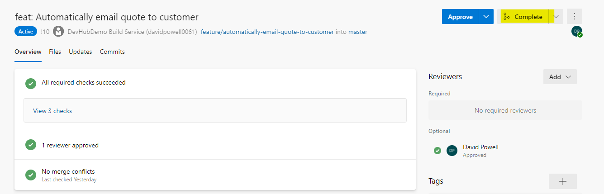
- You will then see a Complete pull request dialog where you can select merge type and post completion options. You do not need to change any of the default settings. Selecting Complete merge will merge the PR branch into the Master branch and start the process of releasing the changes to the CI environment.
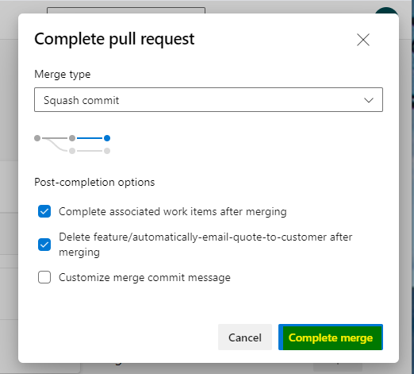
When a Solution Merge has been approved in Development Hub, a Power Automate Flow called When a solution merge is approved -> Merge the solution is triggered which executes a series of tasks to create a Pull Request in ADO.
Overview
The Issue Solution in the Development Hub environment is exported as an unmanaged solution and imported into the Master Environment. The contents of the Issue Solution are then merged into the Target Solution which is then Extracted from the Master Environment.
Extract the solution into a Feature Branch
The extraction of the Target Solution is carried out by a pipeline in Azure Devops(ADO) which in the following example is called almlab.
- Login to the ADO project that contains your Repository and Pipelines.
- Navigate to the Pipelines tab and select the sub item also named Pipelines where you will see a list of recently run pipelines and the extract pipeline may still be running. 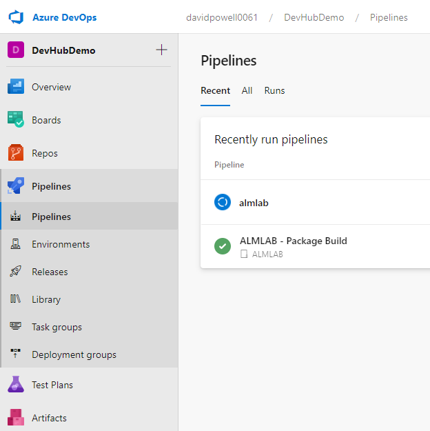
- Clicking on the almlab pipeline opens up a new view which displays the run history in start time order. 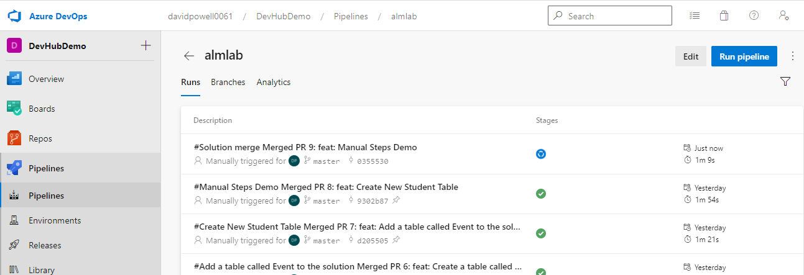
- Clicking on a run will open up its details, where you will see a Jobs section on the Summary tab. 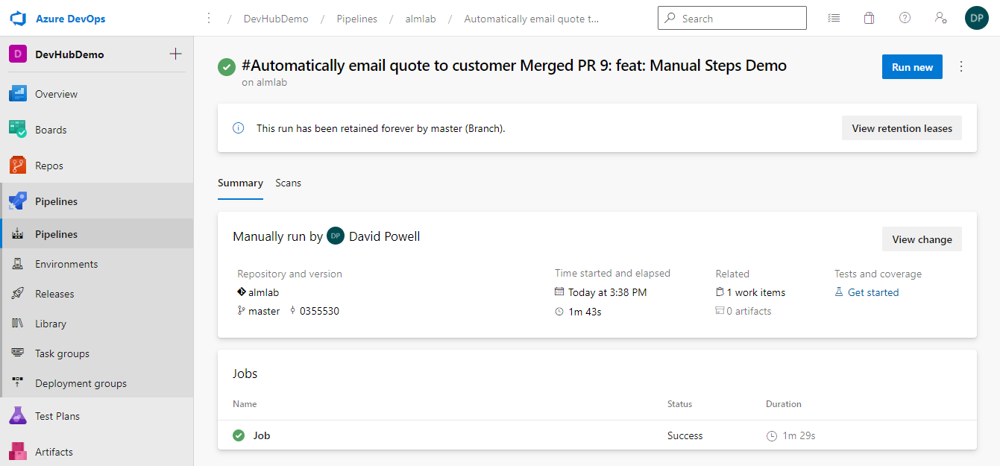
- Clicking on the Job will show you the steps it contains and the result. This is useful when troubleshooting pipeline failures to complete successfully as you can find the task that failed and once selected you will see debug information in the right hand panel. 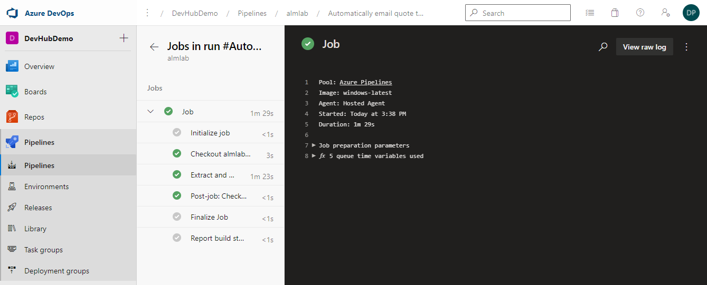
At this point the change will either be committed directly to to the master branch if the source control strategy for the repository is Push or create a new pull request if the strategy is Pull Request.
Validate the Feature Branch
Once the Extract pipeline (almlab) has successfully completed, the pipeline to build the solution is triggered.
This will build the solution to confirm it compiles with no issues and then run the Power Platform Solution Checker to run a static analysis of the solution against a set of best practice rules and quickly identify any problematic patterns found.
- Navigate to the Pipelines tab and select the sub item also named Pipelines where you will see a list of recently run pipelines. The build pipeline (ALMLAB - Package Build) will be listed. 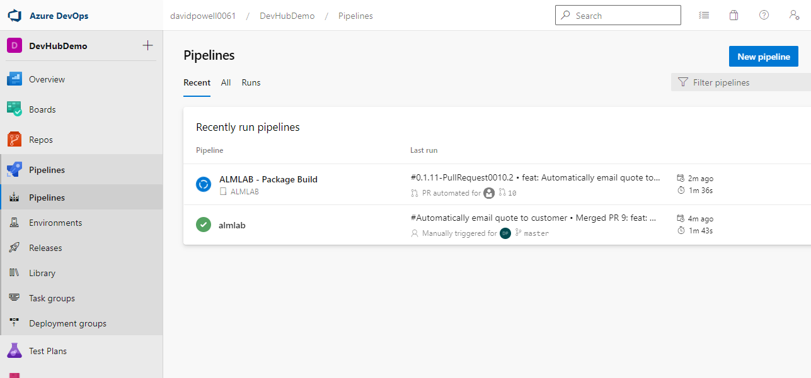
- Clicking on the ALMLAB - Package Build pipeline opens the run history for the pipeline in start time order. 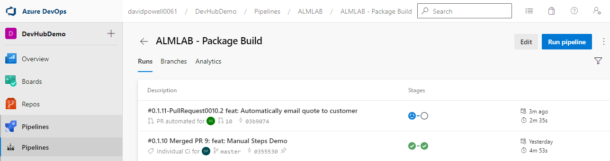
- Clicking on a run will open up the details. You will see a section with 2 tabs Stages and Jobs. You will see the Build stage which confirms the solution builds successfully and a Solution Checker stage which runs static code analysis against the solution components. 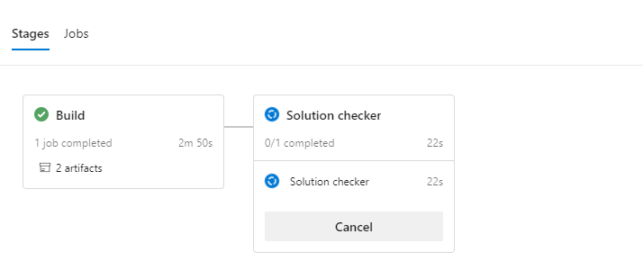
- Clicking on a stage will open up the Job details where you can see the breakdown of tasks for the stages. As with the Extract pipeline this is a great place to start when troubleshooting issues with the pipelines. 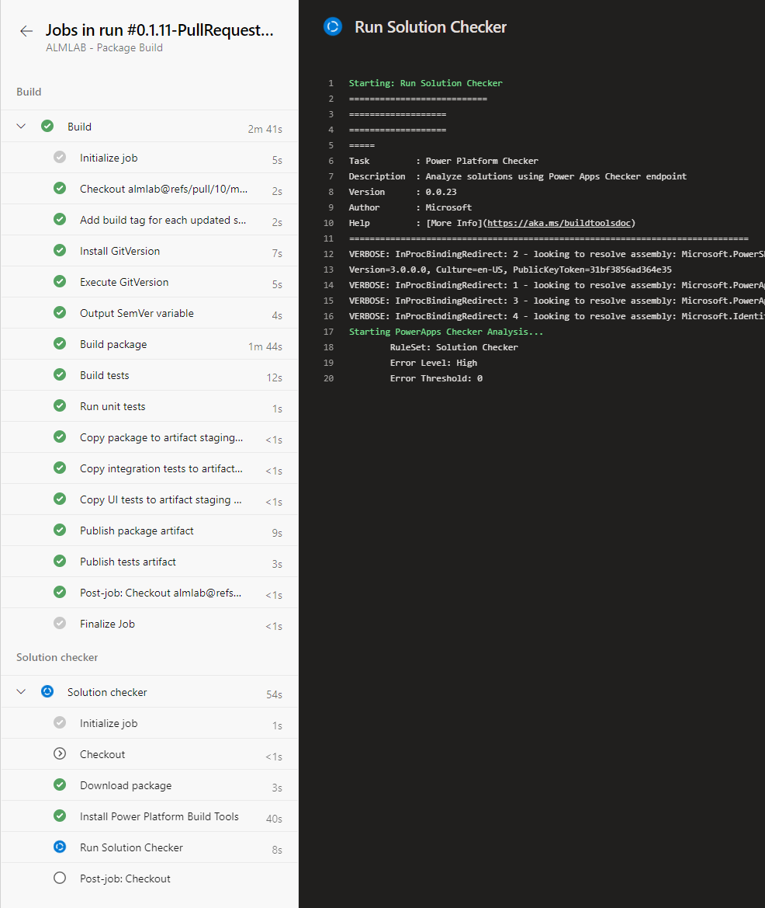
Approve the Pull Request
Once the PR has been approved the Feature branch will be merged into the Master branch of the source code.
The ALMLAB - Package Build pipeline with be run against the Master branch to confirm that the solution builds and the Solution Checker will analyse the solution components.
- Navigate to the Pipelines tab and select the sub item also named Pipelines where you will see a list of recently run pipelines. The build pipeline (ALMLAB - Package Build) will be listed. 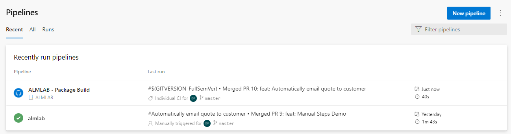
- Clicking on the ALMLAB - Package Build pipeline opens the run history for the pipeline in start time order. 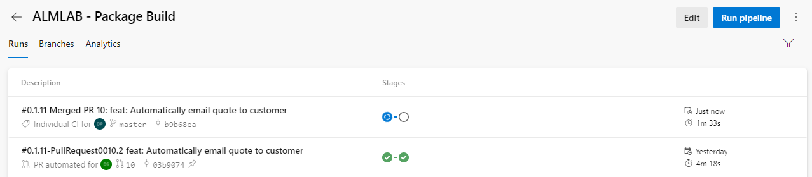
- Clicking on a run will open up the details. You will see a section with 2 tabs Stages and Jobs. You will see the Build stage which confirms the solution builds successfully and a Solution Checker stage which runs static code analysis against the solution components. 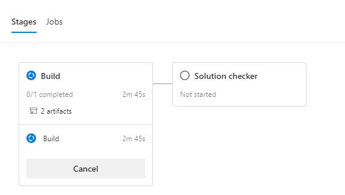
- Clicking on a stage will open up the Job details where you can see the breakdown of tasks for the stages. 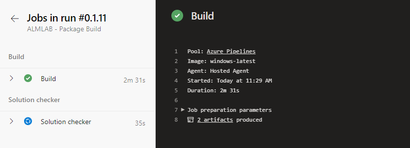
Release to the CI Environment
The solution contained in the Master branch is now deployed into the CI Environment. This is done using a Release pipeline in ADO.
- Navigate to the Pipelines tab and select the sub item Releases. The examples show a release called ALMLAB Release on the left panel where you can search for pipelines if required.
- Select the release ALMLAB Release and you will see a tab on the right hand side with a tab called releases which contains a list of the runs in order of start time. 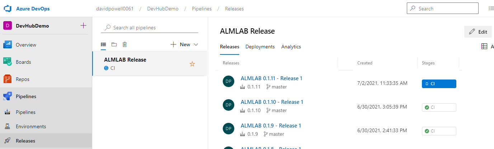
- Clicking a release run will display the Stages which the release runs. In this case you will see 1 stage which deploys the solution into the CI Environment. 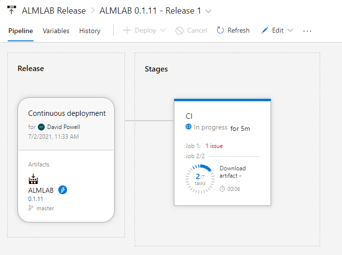
- If you select a Stage you will be given the option to view logs. This will show you a list of steps contained in the stage. Selecting a step will display the tasks with the log information. 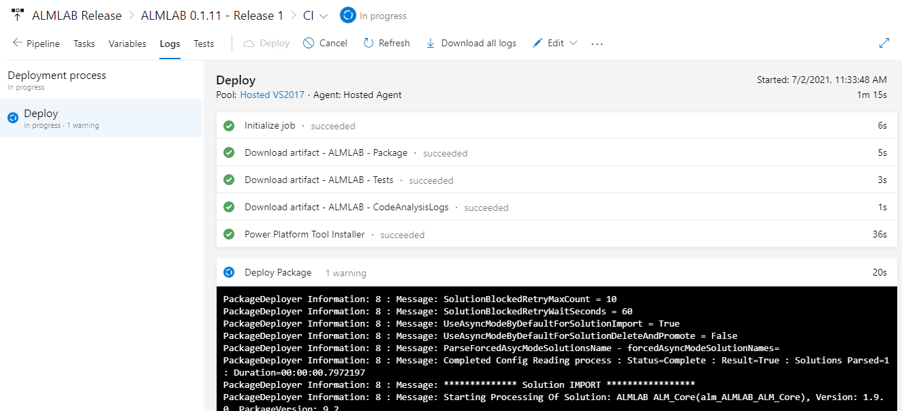